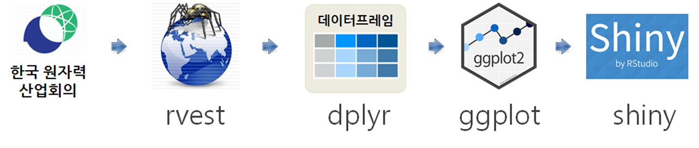
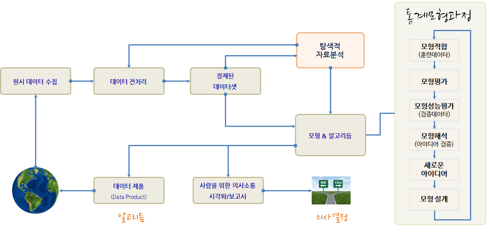
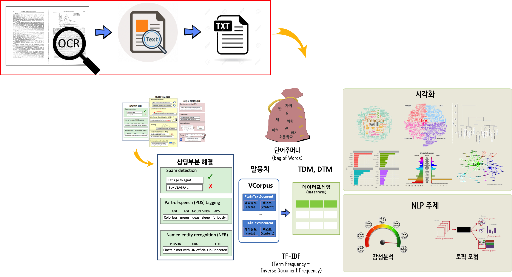

데이터 사이언스 언어 - R
feat. 데이터 과학은 코딩이다.
class: inverse, middle, center
데이터 과학자 1세대
class: inverse, middle, center
빅데이터 → 데이터 사이언스
구글 Trends 데이터 사이언스 한미 비교 - 한국

데이터 사이언스 업무

- 분석(Analytics) 데이터 과학자(Data Analyst)는 좋은 질문을 던질 수 있고, 탐색적 데이터 분석을 통해서 문제와 해법을 명확히 하는 재주가 있고, 대쉬보드와 시각화를 통해 데이터 분석을 자동화하고, 추천 결과물을 통해 비즈니스를 변화시킨다.
- 알고리즘(algorithm) 데이터 과학자(AI/Machine Learning Engineer)는 기계학습에 특기가 있는 사람에 적합하고 제품/서비스, 프로세스에 데이터를 알고리즘을 통해 녹여내서 비즈니스 가치를 창출한다.
- 추론(inference) 데이터 과학자(Statistician)는 통계를 사용해서 의사결정을 향상시키고, 업무의 영향도를 측정하는데 주로 통계학, 경제학, 사화과학 전공지식을 적극 활용한다.
.footnote[ Elena Grewal(July 25, 2018), “One Data Science Job Doesn’t Fit All”]
위기의 스프레드쉬트(엑셀)
.center[ ]
.footnote[ 스터디 뽀개기 7월 (2016-07-30), 분석행(Train to data-analysis)]
스프레드쉬트를 버려야 하는 6가지 이유
스프레드쉬트를 사용하는 이유
- 항상 엑셀을 사용했다: 항상 데이터를 엑셀로 저장하고 분석해서 사용했다. 하지만, 버튼 하나로 데이터를 내보내기 쉽다.
- 데이터베이스를 사용할 만큼 데이터가 충분하지 않다: 데이터가 작아서 데이터베이스를 사용할 이유를 찾지 못하지만, 사업이 커지고, 업무량이 늘어나면서 엑셀 작업량이 높아지고, 복잡성도 커지고, 엑셀 자체에서 처리되는 시간도 늘어난다.
- 한번에 한사람만 작업이 가능하다.
- 데이터 감사는 데이터베이스에서만 가능
- 데이터베이스는 정형화된 작업흐름을 지원한다.
- 데이터베이스는 엑셀보다 모형을 보다 잘 지원한다.
- 데이터베이스로 보고서 생성이 수월하다.
- 데이터베이스는 보안이 강력하고 규제하기 좋다.
.footnote[ 데이터 과학, “위기의 스프레드쉬트”]
스프레드쉬트 복잡성과 효율성
- 스프레드쉬트는 데이터, 서식, 수식으로 구성된다.
- 숫자 데이터를 엑셀로 가져오게 되면 엑셀 내장 함수를 통해 수식 계산을 수행한다.
- 엑셀 사용자 본인 혹은 외부 사람을 위해 서식을 입히는 과정을 거쳐 비로소 완성된 스프레드쉬트가 된다.
.center[  ]
]
.footnote[ 탈옥(jailbreakr) – 엑셀에서 탈출… 자유]
파워포인트의 종말 ← 아마존 제프 베이조스
.center[  ]
]
.footnote[ 김미리 기자 (2019.04.06.), “보고서 치장은 그만, 글로 써라.. ‘제로 PPT’ 선언하는 기업들”, 조선일보]
도구가 자동화하는 저작 업무
.pull-left[ ### 1. \(LaTex\) 사례 
정보교육을 위한 파이썬: 데이터 과학자로의 여정, 아마존 절찬 판매중 ]
.pull-right[ ### 2. 북다운(Bookdown)
.center[ ] 컴퓨터 과학 언플러그드, 이광춘 번역 ]
도구가 자동화하는 저작 업무
5. 슬라이드쇼(slideshow)
.center[  ]
]
.footnote[ 소프트웨어에 물들다(왕곡초등학교, 2018-05-26) - 글쓰기를 잘하기 위해서 알아야 되는 코딩]
재현가능한 글쓰기
.center[  ]
]
.footnote[ 데이터 과학: 재현가능한 저작 - R 마크다운 논문]
데이터로 저작 사례
데이터 사이언스 제품
.center[


]
.footnote[ 데이터야 놀자 발표자료(2017)]
class: middle
BMI 데이터 사이언스 보고서
author_carpentry_kr/tutorial/reproducible_finance/reproducible_finance.Rmd
.footnote[ 재현가능한 데이터 사이언스 - BMI]
사람 vs. 기계
.center[ ]
.footnote[ 기초 통계 -통계 모형(Statistical models)]
데이터 사이언스 언어 추상화
R을 예로 들면, 팩키지 개발을 할 때 R 스크립트로 모든 기능을 선행하여 기능을 구현하고 유용성이 인정되어 사용자가 많아지면, Rcpp 팩키지를 사용하여 C/C++로 후행하여 속도와 성능이 필요한 부분에 재개발하는 경우가 흔하다.
.center[  ]
]
왜 R 언어인가?
.center[  ]
]
데이터 탐험(Data Adventure)
2019년 1월 28일, 마이크로소프트웨어 395호 데이터 탐험(Data Adventure)편
.left-column[  ]
]
.right-column[ - SCHEMA - S1. 데이터 사이언스, 타이디버스로 향하다 - 이광춘 - S2. 데이터 분석가는 어떤 스킬셋을 가져야 하는가 - 서희 - OPINIONS, - FUTURE - TECHNOLOGY - WORKS - APPLIED - RESEARCH - ETC]
.footnote[ MICRO SOFTWARE 홈페이지, 마이크로소프트웨어 395호 데이터 탐험(Data Adventure)]
왜 시각화하는가?
.center[  ]
]
인터랙티브 시각화 - crosstalk
이광춘, “데이터 과학자의 시각화 - 다른 위젯 조합 - crosstalk”, 데이터야 놀자 2018
빅데이터 시각화
이광춘 (2019-03-08), “빅데이터 시각화 주식 - trelliscope: 코스피 200 주식데이터”
데이터 사이언스와 API 프로그래밍
- 들어가며: 코드 몇줄로 엄청난 생산성!!!
- 웹크롤링과 API 비교
- 유료와 무료
- AI 인공지능
.footnote[ - 안상선 M로보 대표 “MVP는 경운기 만드는 과정” - 이광춘 (2019-04-04), “’뉴스 데이터’라고 읽고 ’텍스트 데이터’로 분석하여 사례 만들기”, 한국언론진흥재단, “2019 뉴스빅데이터 해커톤 개최”]
금융 적용 - 인지기술(cognitive technology)
.center[ ]
- 각종 계약서
- 리보(LIBOR, London Interbank Offered Rate, 런던 은행간 금리)가 명기된 계약서
- 우편 분류
class: middle
R powered by AI
author_carpentry_kr/tutorial/reproducible_finance/shiny/author_carpentry_kr/tutorial/reproducible_finance/shiny/global.R
author_carpentry_kr/tutorial/reproducible_finance/shiny/server.Rauthor_carpentry_kr/tutorial/reproducible_finance/shiny/ui.Rauthor_carpentry_kr/tutorial/reproducible_finance/shiny/www/*.jpg